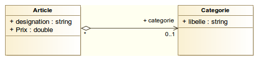

Une partie essentielle pour toute application, quel que soit le langage utilisé est la gestion des données, entendez par là l'enregistrement, la récupération et tout traitement qui peut être effectué.
En java, vous avez l'API JDBC qui est une première couche pour l'accès aux base de données relationneles, ensuite vient JPA qui apporte une couche d'abstraction nécessaire pour permettre de faire un mapping objet-relationnel entre nos objets java et la base de donnée!
Le but de cet article est de montrer comment utiliser Spring data JPA, une librairie qui facilite l'accès aux données et qui se positionne au dessus de JPA. J'en ai déjà fait une présentation dans un article précédent, aussi je vais ici montrer comment le mettre en oeuvre dans un projet!
Le projet
Nous allons créer une application dont le but sera d'enregistrer des articles d'un magasin dans une base de donnée! Ci-après le diagramme de classe pour montrer un peu ce que seront nos objets métiers.

Vous l'aurez sans doute compris, ce n'est pas une application complète de gestion de stock que nous allons mettre sur pied mais juste un exemple pour vous permettre de débuter avec spring data.
Créer son projet sous maven
Pour commencer nous allons créer un projet java sous maven. Les IDE actuels vous offrent cette possibilité de choisir le type de projet que vous voulez créer alors, je suppose que là pas de soucis pour vous chers lecteurs ;)
Modifier le fichier pom.xml pour ajouter les dépendances nécessaires
Pour pouvoir utiliser spring data il nous faut ajouter la librairie correspondante dans nos dépendances et bien entendu intégrer le connecteur adéquat pour la base de donnée dans laquelle on souhaite sauvegarder les données. Pour notre exemple, nous allons utiliser mysql mais vous pouvez utiliser une autre base de données sans problème, spring data supporte la majorité des bases de données relationnelles.
Aussi, le fichier de configuration doit ressembler à ce qui suit:
<project xmlns="http://maven.apache.org/POM/4.0.0" xmlns:xsi="http://www.w3.org/2001/XMLSchema-instance" xsi:schemaLocation="http://maven.apache.org/POM/4.0.0 http://maven.apache.org/xsd/maven-4.0.0.xsd">
<modelVersion>4.0.0</modelVersion>
<groupId>com.centonni.</groupId>
<artifactId>debut-spring-data</artifactId>
<version>0.0.1-SNAPSHOT</version>
<name>Debuter avec spring data</name>
<!-- Spring boot pour l'ajout automatique des dépendances nécessaires et l'autoconfiguration -->
<parent>
<groupId>org.springframework.boot</groupId>
<artifactId>spring-boot-starter-parent</artifactId>
<version>1.3.0.RELEASE</version>
</parent>
<properties>
<java.version>1.8</java.version>
</properties>
<dependencies>
<!-- Spring data jpa -->
<dependency>
<groupId>org.springframework.boot</groupId>
<artifactId>spring-boot-starter-data-jpa</artifactId>
</dependency>
<!-- Le connecteur mysql pour java -->
<dependency>
<groupId>mysql</groupId>
<artifactId>mysql-connector-java</artifactId>
</dependency>
</dependencies>
</project>
Définir les classes entités
Les classes entités sont les objets de notre application qui vont en fait devenir des tables dans notre base de données. Dans notre modèle, nous avons deux classes, Article et Categorie.
La classe Article :
package com.centonni.debutspringdata;
import javax.persistence.Entity;
import javax.persistence.GeneratedValue;
import javax.persistence.GenerationType;
import javax.persistence.Id;
import javax.persistence.ManyToOne;
@Entity
public class Article {
@Id
@GeneratedValue(strategy=GenerationType.AUTO)
private Long id;
private String designation;
private Double prix;
@ManyToOne
private Categorie categorie;
protected Article() {
}
public Article(String designation, Double prix, Categorie categorie) {
this.designation = designation;
this.prix = prix;
this.categorie = categorie;
}
public Long getId() {
return id;
}
public void setId(Long id) {
this.id = id;
}
public String getDesignation() {
return designation;
}
public void setDesignation(String designation) {
this.designation = designation;
}
public Double getPrix() {
return prix;
}
public void setPrix(Double prix) {
this.prix = prix;
}
public Categorie getCategorie() {
return categorie;
}
public void setCategorie(Categorie categorie) {
this.categorie = categorie;
}
}
La classe Categorie
package com.centonni.debutspringdata;
import javax.persistence.Entity;
import javax.persistence.GeneratedValue;
import javax.persistence.GenerationType;
import javax.persistence.Id;
@Entity
public class Categorie {
@Id
@GeneratedValue(strategy=GenerationType.AUTO)
private Long id;
private String libele;
protected Categorie() {
}
public Categorie(String libele) {
this.libele = libele;
}
public Long getId() {
return id;
}
public void setId(Long id) {
this.id = id;
}
public String getLibele() {
return libele;
}
public void setLibele(String libele) {
this.libele = libele;
}
}
Les classes Article et Categorie sont annotées avec @Entity, ceci pour indiquer à JPA que cette classe est une entité et sera donc crée dans la base de donnée comme une table.
Les différents attributs de ces classes seront mappés par JPA pour devenir les champs des différentes tables qui seront crées dans la base de données.
L'annotation @Id permet de préciser le champ qui sera l'identifiant de la table dans la base de données et @GeneratedValue permet de spécifier que l'identifiant devra être généré automatiquement.
Configurer la base de données
Nous allons nous intéresser à la base de données maintenant, pour que notre application puisse se connecter à la base, nous devons lui fournir les informations d'accès (nom de la base, utilisateurs etc..).
Pour ce faire nous allons créer un fichier nommé application.properties, il est à placer dans le répertoire de ressources (src/main/resources) de votre projet maven. Il devra avoir les valeurs ci-après:
#chemin d'accès à la base de donnée
spring.datasource.url=jdbc:mysql://localhost/demodata
#utilisateur de la base de données
spring.datasource.username=root
#mot de passe de l'utilisateur de la base de données
spring.datasource.password=root
Et voilà, c'est tout ce qu'il nous faut pour configurer la base de données! spring boot que nous avons ajouté comme librairie dans les dépendances de notre projet va se charger de toute la configuration permettant la communication avec la base de données.
Créer nos requêtes d'interrogation de la base de données
Pour interagir avec la base de donnée spring data met disposition un certain nombre d'interfaces spécialisées avec des méthodes CRUD permettant de faire des opérations de base sur n'importe quellle entité, à savoir la création, la mise à jour, la suppression et la lecture de données.